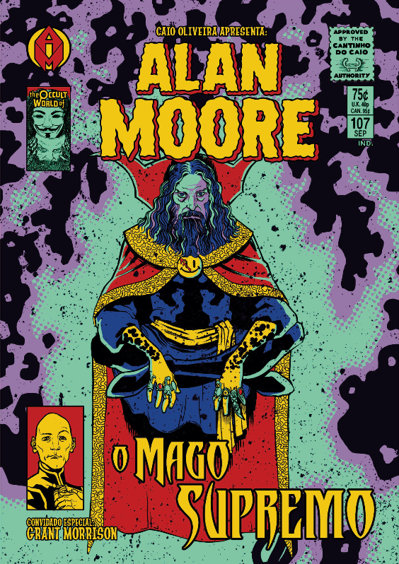

Alan Moore é um escritor inglês conhecido principalmente por seu trabalho em histórias em quadrinhos, considerado por alguns como o melhor escritor de "graphic novel" da história
Moore nasceu em 18 de novembro de 1953, no hospital "St. Edmond's em Northampton". Sua família era de classe operária e Moore acreditava que eles viviam na cidade há várias gerações. Moore cresceu numa parte de "Northampton" conhecida como "The Boroughs", uma área indigente, com altos índices de analfabetismo. Ele, contudo, gostava da região, como o proprio já disse: "amava lá. Eu amava as pessoas. Amava a comunidade e... Eu não sabia que existia outra coisa além daquilo." Na casa de seus pais, moravam o próprio Moore, sua mãe, Sylvia Doreen, que trabalhava numa gráfica, seu pai, Ernest Moore, que trabalhava numa cervejaria, seu irmão caçula, Mike, e sua avó materna.
Moore estudou na escola primária "Spring Lane". No mesmo período, começou a ler tirinhas. Inicialmente, eram tirinhas inglesas, como "Topper" e "The Beezer", mas, eventualmente, também começou a ler HQs americanas como "The Flash", "Detective Comics", "Quarteto Fantástico e Falcão Negro". Depois, ele passou no exame 11-plus (teste aplicado ao final do ensino primário) e foi admitido na "Northampton Grammar School", onde pela primeira vez, ele encontrou pessoas de classe média e mais instruídas. Ele se chocou pela maneira como se transformou num dos piores alunos da classe no ensino médio depois de ter sido um dos melhores alunos no ensino primário. Mais tarde, não gostando da escola e não tendo "nenhum interesse em estudos acadêmicos", ele diria que acreditava que havia um "currículo secreto" sendo ensinado, cujo objetivo era doutrinar crianças com "pontualidade, obediência e aceitação da monotonia"
Por alguns anos, Moore ainda morou na casa de seus pais ao mesmo tempo que passou por diversos empregos, incluindo limpador de banheiros e curtidor de couro. No final de 1973, ele conheceu e iniciou um relacionamento com outra nativa de "Northampton: Phyllis Dixon", com quem ele se mudou para um "pequeno flat de um cômodo na área da Barrack Road em Northampton". Eles se casaram logo em seguida e mudaram-se para uma council house no distrito leste da cidade. Ao mesmo tempo, Moore estava trabalhando no escritório de um sub-contractor para o conselho de combustível local, mas não estava se sentindo realizado neste trabalho. Decidiu, então, tentar ganhar a vida fazendo algo mais artístico.
Vagando por Londres, conhecendo todo tipo de gente, ele criou histórias medonhas com seus amigos. Publicou, com seu grupo, a revista "Embryo" e começou a trabalhar no periódico. Desta forma, envolveu-se com o "Laboratório de Artes de Northampton". Em 1974, Moore casou-se com Phyllis, com quem teve duas filhas: Leah e Amber. Cinco anos depois, Alan Morre tornou-se cartunista da Sounds, (periódico semanal sobre música). Nesta revista, ele utilizava o pseudônimo de "Curt Vile".
Porém, Moore acaba percebendo seu pouco talento para a ilustração e começa a focar na criação de histórias. Entre seus principais títulos do começo da carreira estão "D.R. & Quinch, SKIZZ e A Balada de Halo Jones". A segunda incursão de Moore no mercado editorial foi na revista Warrior, que publicava coletâneas. Nesta, iniciou duas de suas séries mais aclamadas: V de Vingança e Marvelman. A primeira era uma história distópica sobre a luta pela dignidade em uma Inglaterra dominada por fascistas. Ambos trabalhos renderam-lhe o prêmio British Eagle Awards, em 1982 e 1983, na categoria de Melhor Escritor de Quadrinhos.
Com isso, ganhou certa fama na área, o que lhe rendeu a primeira série de quadrinhos americana: O Monstro do Pântano. Nesta HQ, Moore atualizou o já tradicional personagem e o colocou em histórias com temáticas polêmicas como lixo tóxico nuclear, preconceito étnico e controle de armas. Um ano crucial na vida de Alan Moore foi 1986. Naquela época, a editora DC Comics buscava reconstruir seu tradicional universo de heróis e tramas de histórias em quadrinhos. Moore acabou escrevendo Watchmen para a DC e, junto a Frank Miller, que havia feito Batman - O Cavaleiro das Trevas, redefinindo a forma e o tom das HQs do período, influenciando uma infinidade de novos ilustradores e roteiristas, até os dias atuais.
Porem no mesmo perido a relação de Moore com a DC Comics havia se deteriorado por completo, pelas questões dos direitos de autores e merchandising. Moore não recebeu nenhum "royalty" por um conjunto de insígnias baseado em Watchmen, pois a DC o definiu com o um "item promocional", e, de acordo com certos relatos, ele e ganhou apenas 2% do lucro recebido pela DC de Watchmen. Enquanto isso, um grupo de autores, incluindo Moore, Frank Miller, Marv Wolfman e Howard Chaykin se desligaram da DC por conta de uma proposta de sistema de classificação etária similar ao utilizado em filmes. Depois de completar V de Vingança, Moore parou de trabalhar para a DC.
Após abandonar a DC Comics e o "mainstream", Moore, atuou por um longo tempo na area "independente" dos quandrinhos, trabalhando em trabalhos experimentais como "From Hell", "A Small Killing", o "inteligentemente pornográfico, Lost Girls" (como o proprio como Moore se refere a obra), e "Voice of the Fire". Posteriormente, ele retornou ao "mainstream" dos quadrinhos durante o final dos anos 90, antes de desenvolver o "America's Best Comics", uma marca através da qual publicou outras obras de renome, como "The League of Extraordinary Gentlemen"o "Promethea".
Moore é um dos principais responsaveis pela revolução das historias em quadrinhos, pois suas obras foram capazes de mostrar ao mundo que os quadrinhos poderiam abordar temas "mais complexos" e "adultos", deixando assim com que eles deixassem de ser considerado por muitos como apenas um "entretenimento para crianças"
Moore ganhou diversos Prêmios "Eagle", chegando, em 1986, a ser premiado em quase todas as categorias por seu trabalho em "Watchmen" e "Swamp Thing". Moore não só ganhou como Escritor Favorito nas categorias EUA e Reino Unido, mas seu trabalho também ganhou nas categorias de Quadrinho Favorito, Personagem Secundário, História Regular e Personagem Digno de Própria Revista no Reino Unido (onde, na última categoria, seus trabalhos ficaram em todas as três posições).
Ele recebeu o Prêmio "Harvey" de Melhor Escritor em 1988 (por Watchmen), em 1995 e 1996 (por From Hell), em 2000 (por The League of Extraordinary Gentlemen), e em 2001 e 2003 (por Promethea). Moore recebeu o Prêmio Eisner de Melhor Escritor nove vezes desde 1988 e em 2005, sua obra "Watchmen" foi o único quadrinho incluído na lista dos 100 melhores romances de 1923 ao presente da revista "Time".